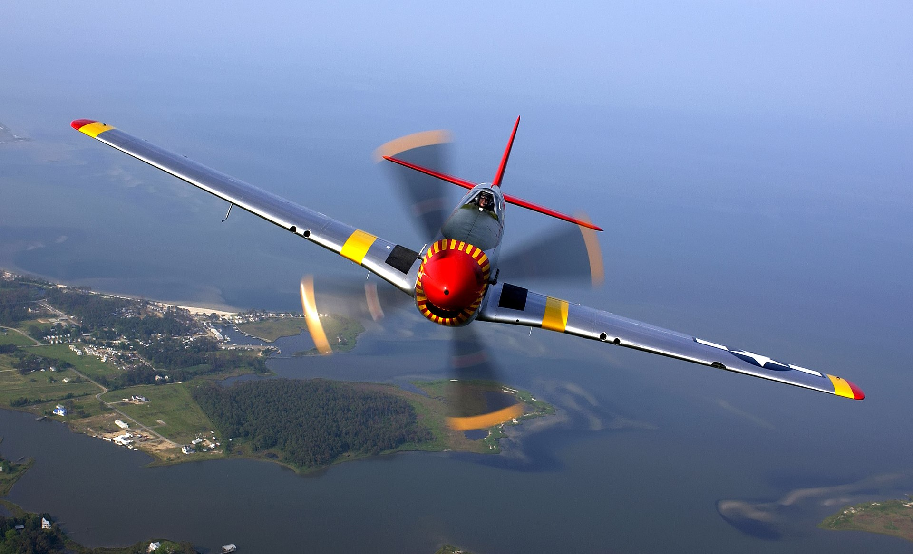

Airplane
An airplane or aeroplane (informally plane) is a fixed-wing aircraft that is propelled forward by thrust from a jet engine, propeller, or rocket engine. Airplanes come in a variety of sizes, shapes, and wing configurations. The broad spectrum of uses for airplanes includes recreation, transportation of goods and people, military, and research. Worldwide, commercial aviation transports more than four billion passengers annually on airliners and transports more than 200 billion tonne-kilometers of cargo annually, which is less than 1% of the world's cargo movement.[3] Most airplanes are flown by a pilot on board the aircraft, but some are designed to be remotely or computer-controlled such as drones.
Etymology and usage
First attested in English in the late 19th century (prior to the first sustained powered flight), the word airplane, like aeroplane, derives from the French aéroplane, which comes from the Greek ἀήρ (aēr), "air" and either Latin planus, "level", or Greek πλάνος (planos), "wandering". "Aéroplane" originally referred just to the wing, as it is a plane moving through the air. In an example of synecdoche, the word for the wing came to refer to the entire aircraft.
In the United States and Canada, the term "airplane" is used for powered fixed-wing aircraft. In the United Kingdom and Ireland and most of the Commonwealth, the term "aeroplane" is usually applied to these aircraft.
Hämeen ammattikorkeakoulu
HAMK PL 230 13101
Hämeenlinna